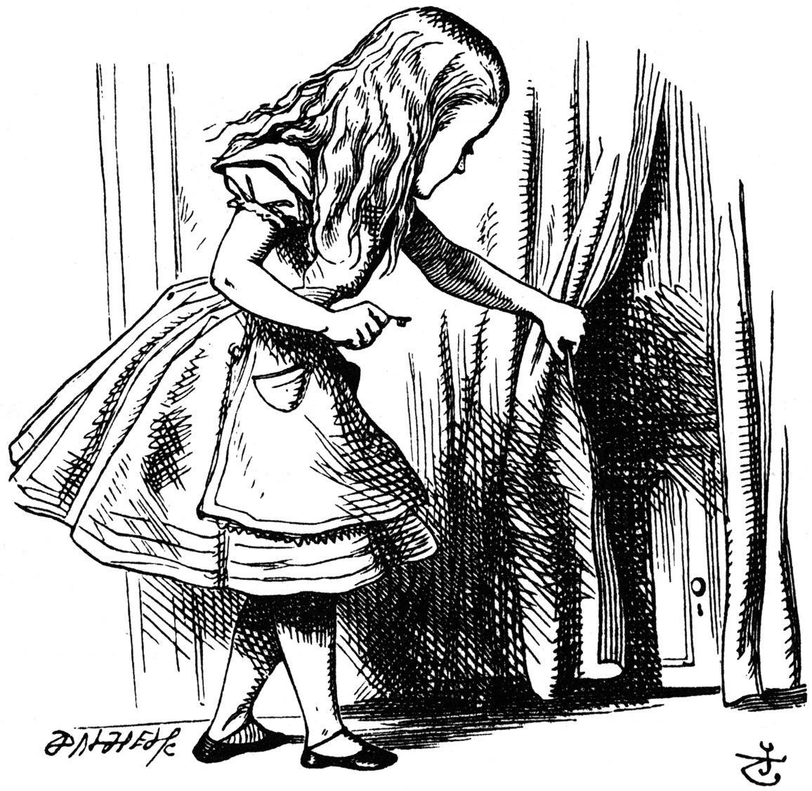

200 OK
6/9/2013It seems to me, having, for better or worse, cartwheeled through Academe, that skepticism is the natural end toward which any thoughtful, if carousing, journey through those idyllic groves ought to tend.
(Of course, such is and has always been my easy way to shirk assignments and exhortations to wrestle with material that—somehow—somebody sometime thought was useful.
Perhaps, that is, skepticism is acedia's panacea—inertia's nostrum! (—and at the end of a brief trip through my lovely Lyceum, maybe I just fear I feel I haven't drunk a long enough drink from the inkhorn or sampled the donnish distillates that might have rent the veil. (Which veil? Well, how could I know, having never even noticed I was so atrociously enshrouded?))
(To all of which, darling delightful skepticism says, “Pshaw. Egghead.” So humbly, in its coy tyranny, it turns on itself.))
If not an altogether contemnible outlook, however, skepticism may just be one of the healthier positions to adopt. Washing oneself of most everything, one is still left with something. Or as Jinny Woolf put it, when the universe is debrided of its wacky shapes and edifices, “it is not oneself but something in the universe that one's left with,” “somehow beautiful, as it flits with its lantern restlessly up and down the dark corridors.”
That is, skepticism is a way of boiling away that sea of troubles that Hamlet cried long and hard about. (Maybe it's a boiling that, hardy har har, is only possible if that sea is small enough—which, as someone whose current greatest trouble is his self-imposed decision to dispense with jQuery, I can probably say is true for my teacup sea.) Left on the benthic desert, one can more closely look at these hands, this self, and the things that have, for all the simmering away, clung.
I am left, for instance, with the vastness of the universe, my relative insignificance, the incomprehensibility of pride amid the tentacular, bestial vestiges of our australopithecine forebears, “the themes thou lovest best, night, sleep, death and the stars” (quoth Whitman). Bleak, perhaps, but never sad.
But that's the crux of my—delusion, I'll call it: to banish meaning and retain, despite meaninglessness' devastating invasiveness, any existential stability; to unmoor oneself and ride whatever current existence careens through, if not in the peace which passeth understanding, in a peace that, at any rate, general nihilism does not immediately seem to offer up—to figure out some dramamine against that seasickness that scares your average learnèd landlubber away.
Smiling tears, 物の哀れ, are among the purer essences that remain after much (youthful) thought. The appreciative goodbye is the motive force impelling education and mental refinement, the move from more childish conceptions towards an abstraction that seems like it ought, gradually, to explain away all things, each time a veil (or bourne) that, crossed, no traveler returns from.
In the blithe goodbye to the world as unshakeable is an abstraction that if providing no meaning (doing the opposite, in fact), allows one to embrace the darling thing that tries so hard in spite of it all. One is left looking an outlandish lunatic, probably:
if I in my north room
dance naked, grotesquely
before my mirror
waving my shirt round my head
and singing softly to myself:
“I am lonely, lonely.
I was born to be lonely,
I am best so!”
…
Who shall say I am not
the happy genius of my household?
Such a sales pitch, this—mood lighting and insubstantial—but a place from which to begin the never mindlessly but certainly senselessly babbled response code, “200 OK.” Alles gut.